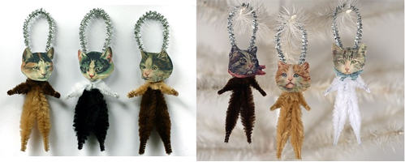
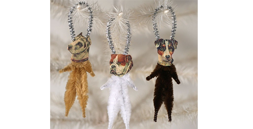
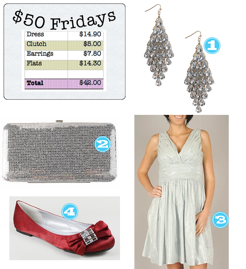

A Very Merry Christmas from the Tipsy Girls and their men 🙂 Photos taken at our 1st Annual Wine/Beer Tasting/Competition Christmas Party.

(We told the guys not to look too excited)


A Very Merry Christmas from the Tipsy Girls and their men 🙂 Photos taken at our 1st Annual Wine/Beer Tasting/Competition Christmas Party.
(We told the guys not to look too excited)
When my TP (Tipsy Pal) AK showed these to me, I knew I had to share with all of you. These are too cute and encompass everything about me. Someone that is obsessed with cats and funky at the same time.

After digging a little deeper, I found the creator of these little jewels (Old World Primitives) not only has her own Etsy shop, but has a neat little unique blog as well. Enjoy! Or just laugh at how nuts I am.
P.S. Lets say you aren’t as awesome as I am and want these in dogs–she’s got em! See here.

I <3 concerts. I go to as many as often as I possibly can (given the schedule with a 7-year-old and work). One band that everyone needs to check out regardless of the genre you gravitate to is What Made Milwakee Famous. They (WMMF) are awesome and from Austin, even better!!!
My boyfriend and I got the luxury of sitting about 10 feet away from them when they played at Warehouse Live in Houston on Friday, December 11th.
If you want to get a quick taste of them, check out my personal favorite, “Cheap Wine“! I bought the CD for my honey and I absolutely am stealing it from him love it.
It’s definitely that time of year again! Parties galore. Work parties, friend parties, family parties. Party.Party.Party. Here’s a look that will take you to all those parties without draining your Christmas shopping fund.

Anyone want to know whats on a 7-year-old’s Christmas list…?? Here it is.
As a side note, Ben (my boyfriend) and I Santa may or may not have shopped at kids.woot.com this year for many of these items 🙂
While strolling through my local mall Christmas Shopping, I stepped foot into Williams Sonoma and discovered what is going to quickly become an addiction. Excuse me while I wipe my drool. Sprinkles Cupcake Mixes! It was so tempting not to purchase each and every one of the flavors. What an awesome gift for yourself or for someone else… OR serve them at your holiday parties and watch how fast they go!
With the holidays normally comes travel and we at Tipsy ALWAYS like to travel in style. So go ahead and tag that luggage and do it with a little humor por favor!

We told you we’d keep you posted here on some of our social gatherings…. This past weekend we attended a company Christmas party. Some things to note:


*We succeeded. We were known as the “fun table”.
So this is our Christmas tradition at my parents house… Christmas morning we eat breakfast, we open gifts, we get dinner started and then we get our game on.
Since we live in the Houston area, the weather is generally not what you think of as wintery…its more like throw a jacket on and go outside and you are fine type of weather. So while dinner is cookin’, we get to gamin’ and let me tell you you might as well have yelled SHALLONGE! The competitiveness that comes out here is unbelievable.
Here’s some ideas for ya…

What do you guys do on Christmas Day?
So you all saw AK’s list of fabulousness. Now it’s my turn.
(Pssst…Husband PLEASE pay careful attention to what is to follow)

Oh, I almost forgot… while I’m wishing… I’ll take an endless supply of these.


{kind=link}
Recent Comments